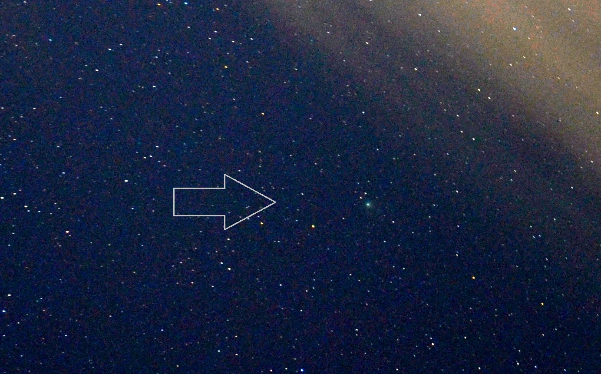
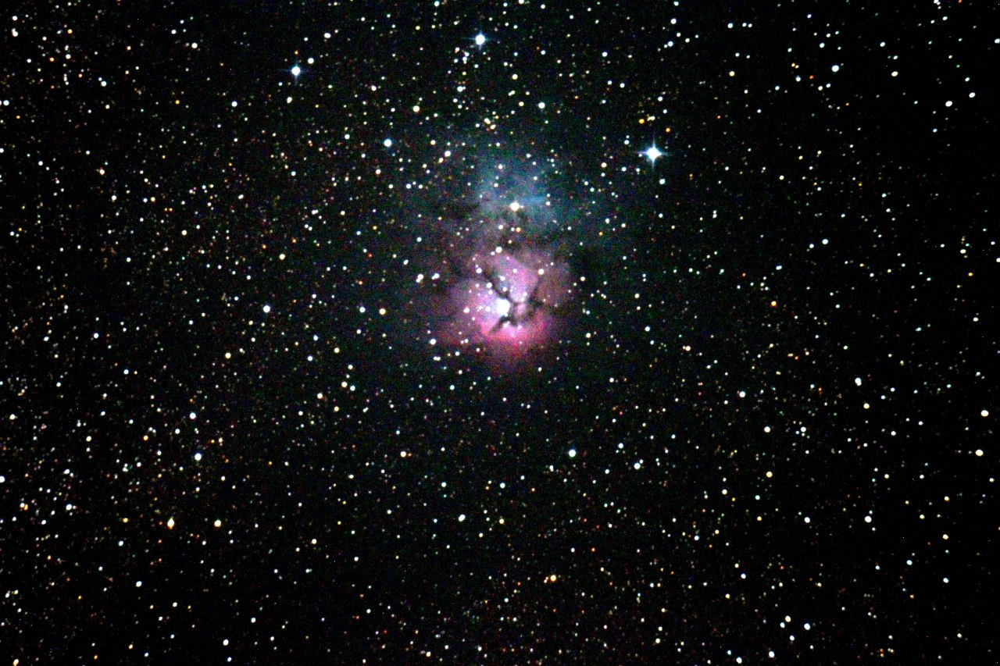
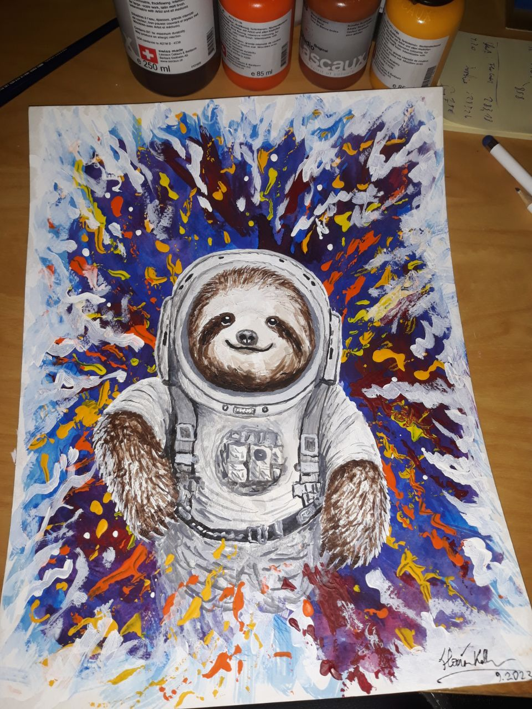

  <style>
    .fade-target {
      opacity: 0;
      transition: opacity 0.4s ease;
    }
    .fade-in {
      opacity: 1;
    }
  </style>
  <style>
    body {
      opacity: 0;
      transition: opacity 0.4s ease;
    }
    body.fade-in {
      opacity: 1;
    }
  </style>
</body>
<script>
  // Fade in on load only
  window.addEventListener('DOMContentLoaded', function() {
    document.body.classList.add('fade-in');
  });
</script>
</html>
  <style>
    body {
      opacity: 0;
      transition: opacity 0.4s ease;
    }
    body.fade-in {
      opacity: 1;
    }
  </style>
</head>
<script>
  // Fade in on load only
  document.addEventListener('DOMContentLoaded', function() {
    document.body.classList.add('fade-in');
  });
</script>
<!DOCTYPE html>
<html lang="en">
<head>
  <meta charset="UTF-8">
  <meta name="viewport" content="width=device-width, initial-scale=1.0">
  <meta name="description" content="Side Projects and Other Topics by Florian Koller">
  <title>Side Projects & Other topics - Florian Koller</title>
  <link rel="stylesheet" href="modern-style.css">
  <link rel="stylesheet" href="modern-style-additions.css">
  <link href="https://fonts.googleapis.com/css2?family=Roboto:wght@400;700&display=swap" rel="stylesheet">
</head>
<body>
  <header class="modern-header">
    <div class="modern-logo">
      
      <h1>Side Projects & Other topics</h1>
    </div>
    <nav class="modern-nav">
      <a href="index_modern.html">Home</a>
      <a href="info_modern.html">About me</a>
      <a href="publications_modern.html">Research & Publications</a>
      <a href="projects_modern.html" class="active">Side Projects & Other topics</a>
      <a href="contact_modern.html">Contact</a>
    </nav>
  </header>
  <main class="modern-main fade-target">
</body>
<script>
  // Fade in only the main content area
  window.addEventListener('DOMContentLoaded', function() {
    var main = document.querySelector('.modern-main');
    if (main) main.classList.add('fade-in');
  });
</script>
</html>
    <section>
      <h2>Astrophotography & Space Projects</h2>
      <div class="modern-gallery" style="display:flex;flex-wrap:wrap;gap:2.5rem 2rem;justify-content:center;">
        <figure style="max-width:700px;width:100%;text-align:center;">
          
          <figcaption style="margin-top:0.7em;">Aurora visible in Graz during huge geomagnetic storm – 11 May 2024</figcaption>
        </figure>
        <figure style="max-width:700px;width:100%;text-align:center;">
          
          <figcaption style="margin-top:0.7em;">Helix Nebula NGC 7293, 30x30s stacked – September 2024</figcaption>
        </figure>
        <figure style="max-width:700px;width:100%;text-align:center;">
          
          <figcaption style="margin-top:0.7em;">Comet 12P/Pons-Brooks, 10x10s stacked – 30 March 2024</figcaption>
        </figure>
        <figure style="max-width:700px;width:100%;text-align:center;">
          
          <figcaption style="margin-top:0.7em;">Ghostly Aurora in Iceland</figcaption>
        </figure>
        <figure style="max-width:700px;width:100%;text-align:center;">
          
          <figcaption style="margin-top:0.7em;">Not-so-ghostly Aurora in Iceland 2023</figcaption>
        </figure>
        <figure style="max-width:700px;width:100%;text-align:center;">
          
          <figcaption style="margin-top:0.7em;">Andromeda Galaxy M31, stacked image</figcaption>
        </figure>
        <figure style="max-width:700px;width:100%;text-align:center;">
          
          <figcaption style="margin-top:0.7em;">Comet C/2022 E3 (ZTF) captured in Graz</figcaption>
        </figure>
        <figure style="max-width:700px;width:100%;text-align:center;">
          
          <figcaption style="margin-top:0.7em;">M27 Dumbbell Nebula, ~20x20s stacked</figcaption>
        </figure>
        <figure style="max-width:700px;width:100%;text-align:center;">
          
          <figcaption style="margin-top:0.7em;">M33 Triangulum Galaxy, stacked image</figcaption>
        </figure>
        <figure style="max-width:700px;width:100%;text-align:center;">
          
          <figcaption style="margin-top:0.7em;">IC 1396 "Elephant's Trunk Nebula", stacked image</figcaption>
        </figure>
        <figure style="max-width:700px;width:100%;text-align:center;">
          
          <figcaption style="margin-top:0.7em;">M20 Trifid Nebula, single image</figcaption>
        </figure>
      </div>
      <h2 style="margin-top:2.5rem;">Paintings, Drawings & Other Artsy Stuff</h2>
      <div class="modern-gallery" style="display:flex;flex-wrap:wrap;gap:2.5rem 2rem;justify-content:center;">
        <figure style="max-width:480px;width:100%;text-align:center;">
          
          <figcaption style="margin-top:0.7em;">3D printed Jebediah Kerman ready to go</figcaption>
        </figure>
        <figure style="max-width:480px;width:100%;text-align:center;">
          
          <figcaption style="margin-top:0.7em;">Stellar evolution & Red Giant Asteroseismology in viewable scale</figcaption>
        </figure>
        <figure style="max-width:480px;width:100%;text-align:center;">
          
          <figcaption style="margin-top:0.7em;">Acrylic paintings: M-dwarf flare & CME (topic of my Master's thesis) and artsy planetary view</figcaption>
        </figure>
        <figure style="max-width:320px;width:100%;text-align:center;">
          
          <figcaption style="margin-top:0.7em;">Space Sloth always fulfills its task... eventually</figcaption>
        </figure>
      </div>
    </section>
  </main>
  <footer class="modern-footer">
    <small>&copy; 2025 Koller | Design inspired by <a href="http://www.freecsstemplates.org/">Free CSS Templates</a>.</small>
  </footer>
</body>
</html>
